Ouça seus podcasts do seu jeito, mesmo sem internet.
O Ecoo é um app de podcast local: sem conta, sem login, sem dado seu saindo do aparelho. Este manual mostra o que cada tela faz — direto, com telas reais do app.
Início — de onde você parou
"De onde você parou e o que saiu de novo"
A primeira tela mostra dois carrosséis: Continuar ouvindo, com os episódios que você deixou pela metade (toque pra retomar exatamente na posição salva), e Novos episódios, juntando os lançamentos mais recentes de todas as suas assinaturas num só lugar — sem precisar abrir podcast por podcast.
Antes de você abrir o app, o Ecoo já rebuscou os feeds assinados em segundo plano (respeitando um limite de 1h por feed, pra não gastar dados à toa) — então o que aparece aqui já está atualizado.
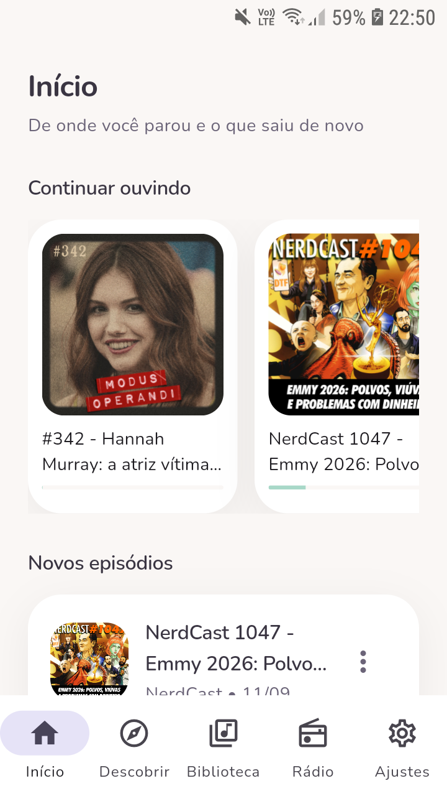
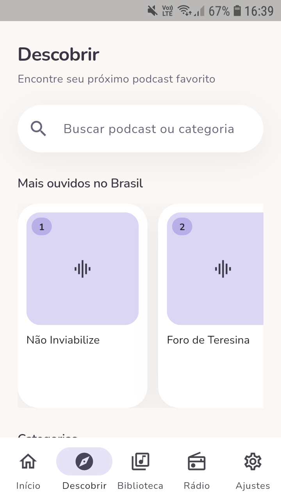
Descobrir novos podcasts
"Encontre seu próximo podcast favorito"
Busque por nome direto na caixa de pesquisa, ou navegue pelo ranking Mais ouvidos no Brasil e pelas categorias (Notícias, Comédia, Sociedade e Cultura, True Crime e outras). Cada resultado mostra autor, capa e quantidade de episódios antes de você assinar.
- Toque num podcast pra ver a lista completa de episódios antes de assinar.
- A busca também funciona por episódio, não só por programa.
- Uma categoria abre a lista inteira daquele gênero, com o mesmo cartão de resultado.
Assinar de qualquer lugar
Deep link — sem precisar abrir o app primeiro
Recebeu o link de um feed RSS por WhatsApp, e-mail ou achou um
https://… de podcast no navegador? Tocar nele abre o
Ecoo direto na tela de assinatura, já com nome, capa e contagem de
episódios do feed — sem copiar/colar nada.
Se o link estiver quebrado ou não for um feed válido, o app mostra um aviso claro de "Link inválido" — nunca some silenciosamente pra tela inicial.
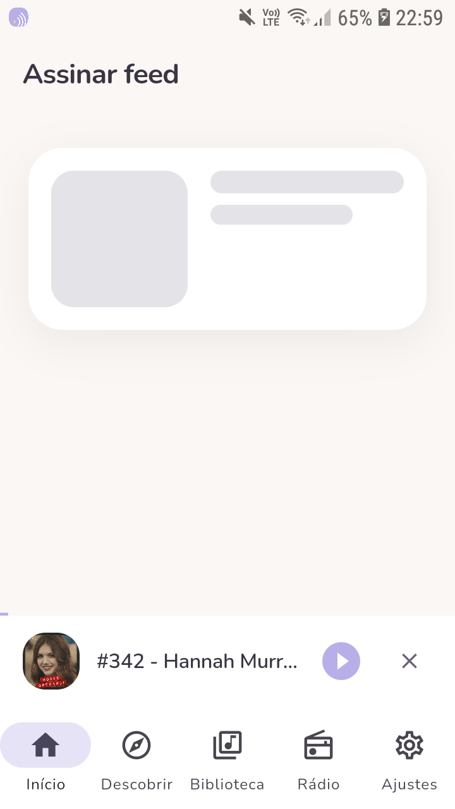
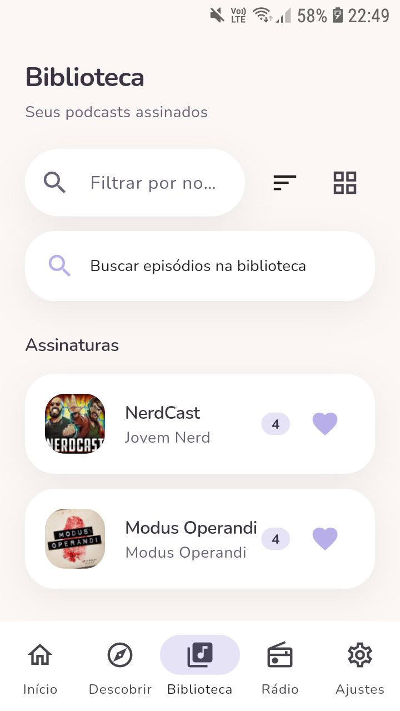
Biblioteca — seus podcasts assinados
Filtrar, ordenar e buscar sem sair da tela
Cada assinatura mostra quantos episódios novos tem e um coração pra favoritar. Dois campos de busca separados: um filtra os podcasts pelo nome, outro busca episódios por título em toda a biblioteca de uma vez.
Dentro de cada podcast, filtros de Todos / Não ouvidos / Ouvidos e ordenação por data — e um painel de ajustes só daquele podcast:
- Baixar automaticamente: nunca, só no Wi-Fi, ou sempre.
- Apagar depois de ouvir: nunca, 7, 14 ou 30 dias.
- Velocidade fixa pra aquele podcast, sobrepondo a velocidade global.
Rádio ao vivo
"Rádios brasileiras ao vivo"
Busque uma emissora por nome, favorite as que você mais ouve (aba Favoritas separada) e toque play — o streaming começa em segundos. O volume da rádio tem controle próprio, independente do volume dos episódios.
Tocar uma rádio pausa automaticamente qualquer episódio em andamento (e vice-versa) — os dois nunca disputam o alto-falante ao mesmo tempo.
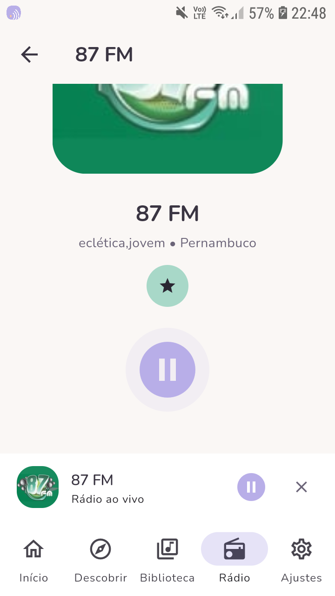
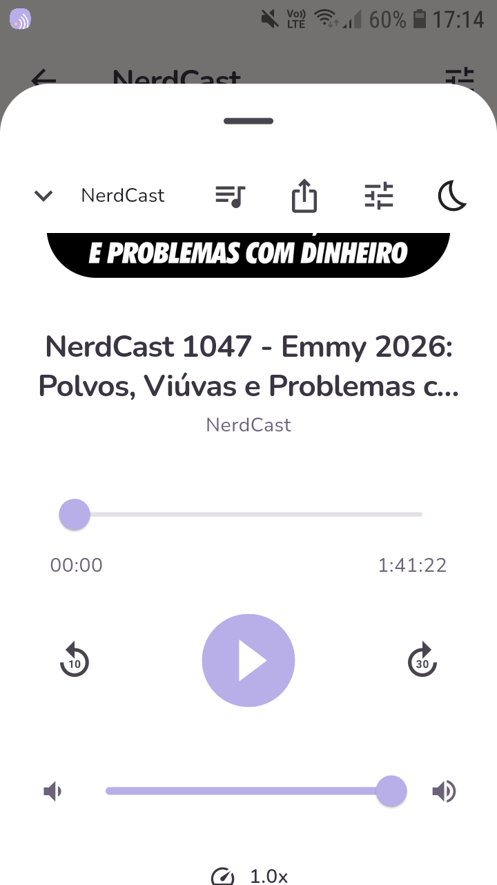
Player — tudo num toque
Um mini-player fica grudado embaixo da tela sempre que algo está tocando; arraste ou toque pra abrir o player cheio, com:
- Avançar 30s / voltar 10s, além da barra de progresso arrastável.
- Velocidade de 0.5× a 3×, com atalho por podcast (ver Biblioteca).
- Capítulos, quando o episódio publica marcação — navegue direto pro trecho.
- Temporizador pra dormir: 5/15/30/60 min ou "fim do episódio" — agite o celular pra somar mais 5 minutos sem tirar do bolso.
- Fila: enfileire episódios direto do menu de opções, reordene e toque em qualquer um.
- Equalizador e reforço de volume (Android): 5 bandas + presets.
Temporizador pra dormir
Escolha um tempo e o áudio pausa sozinho — sem precisar lembrar de voltar depois. Selecionar "fim do episódio" pausa exatamente quando a faixa atual acaba, ideal pra quem ouve antes de dormir.
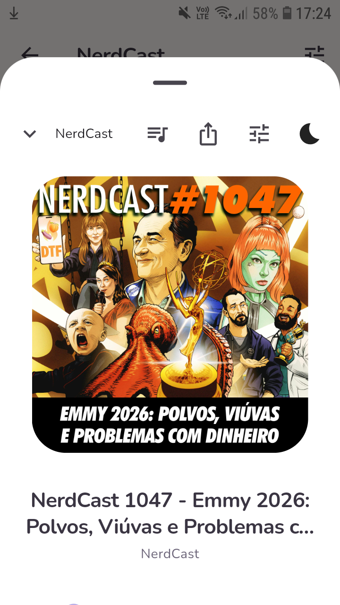
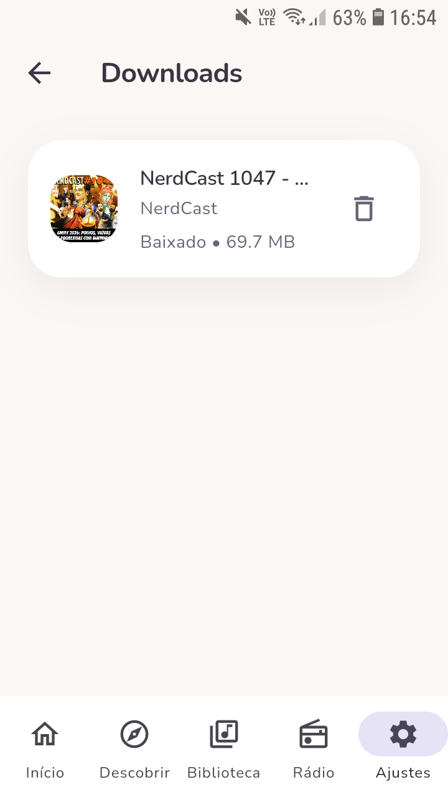
Downloads — ouça sem internet
Toque no ícone de download em qualquer episódio; o progresso aparece ali mesmo e na notificação do sistema. Uma vez baixado, o Ecoo sempre toca o arquivo local — mesmo em modo avião — e mostra quanto espaço cada episódio ocupa.
Fechar o app no meio de um download não perde o arquivo: ao reabrir, o Ecoo confere o status real e corrige sozinho qualquer download que tenha ficado "preso".
Histórico & estatísticas
"Sua escuta" — tempo total, semana atual, sequência de dias
Ajustes traz um resumo rápido de quanto você já ouviu, quanto foi nesta semana e há quantos dias seguidos você não larga o hábito — com um gráfico dia a dia. O Histórico de escuta completo lista cada episódio ouvido, do mais recente pro mais antigo.
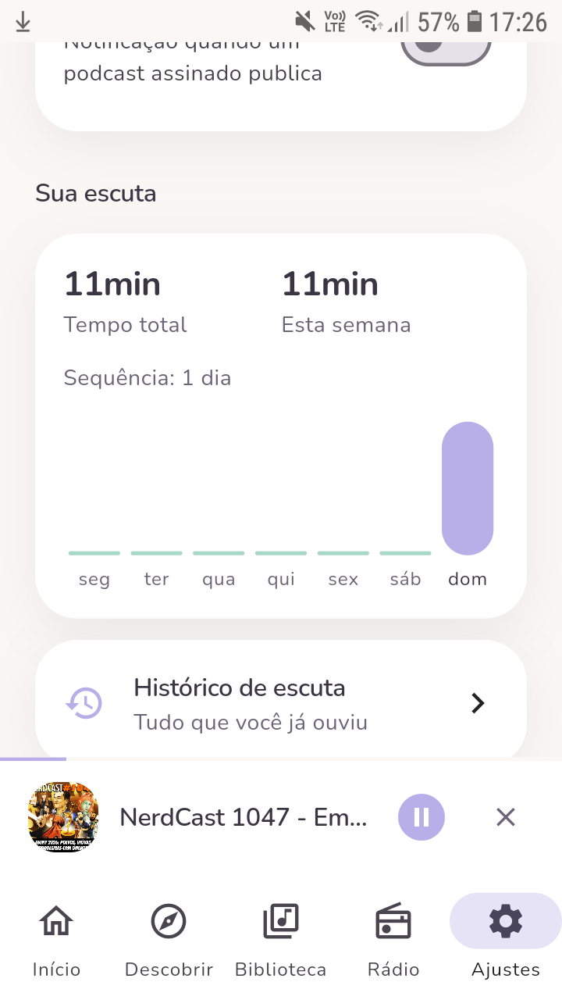
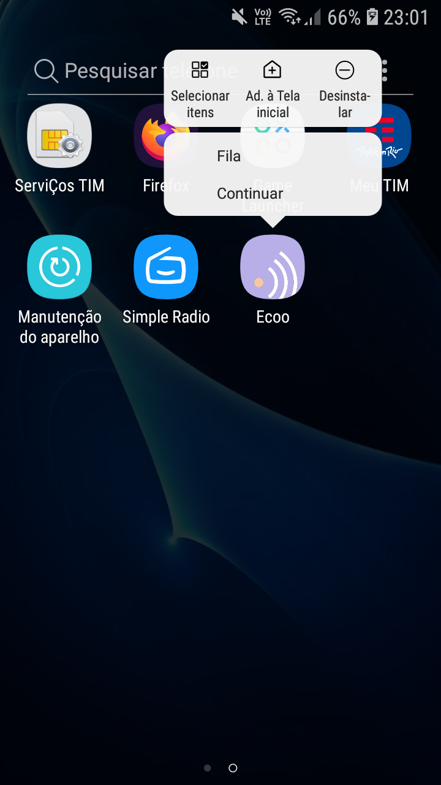
Atalhos & compartilhar
Segure o ícone do Ecoo na tela inicial do celular pra abrir direto na Fila ou em Continuar (retoma o último episódio sem passar pelas abas). Já dentro de um episódio, o botão de compartilhar manda o título, o podcast e o link real do episódio pra qualquer app — WhatsApp, e-mail, o que preferir.
Ajustes
Tudo que configura o app do seu jeito, num só lugar:
- Tema claro, escuro ou seguindo o sistema.
- Atualização em segundo plano a cada ~6h, com opção de só fazer isso no Wi-Fi.
- Avisar de episódio novo por notificação.
- Backup por OPML: exporte suas assinaturas num arquivo pra compartilhar ou guardar, e importe de volta em outro aparelho.
Claro ou escuro — sua escolha
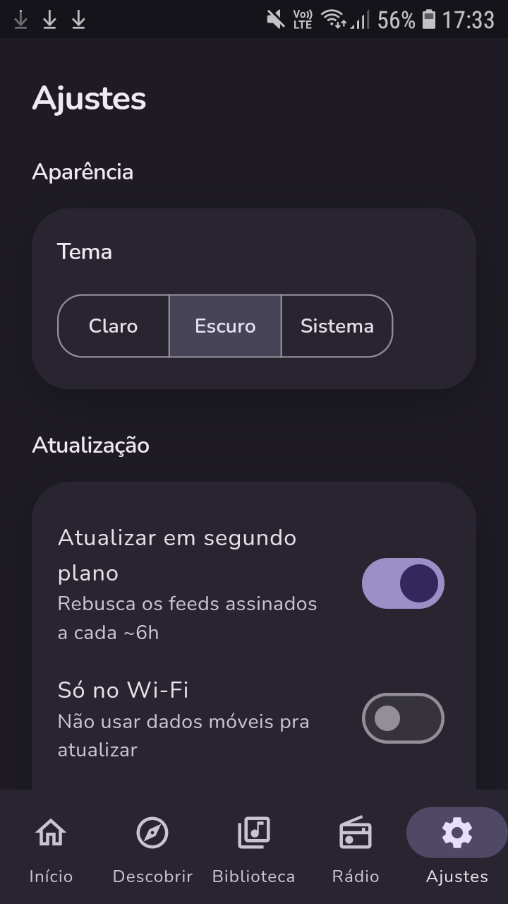